Первый рецепт мясного стейка, официально опубликованный в кулинарной книге, родился в Великобритании в XV веке, и вскоре вся Европа жарила стейки в разных вариантах, в зависимости от кулинарных традиций разных стран. После того как Колумб ввез в Америку крупный рогатый скот с мясом высокого качества, стейки стали готовить и на Американском континенте, причем за короткие сроки это блюдо стало частью национальной кухни Нового Света. Именно в Америке приготовление стейков превратилось в настоящее искусство, и каждый американский повар знает, как вкусно пожарить стейк. Существуют определенные тонкости, которые касаются выбора мяса и различных кулинарных приемов поджаривания, знание которых поможет в освоении этого виртуозного искусства. Итак, попробуем приготовить мясной стейк в домашних условиях!
Как подготовить мясо для жарки
Примерно за час до приготовления мясо следует вынуть из холодильника, чтобы оно нагрелось до комнатной температуры. Это необходимо для равномерной прожарки стейка. Если вы будете готовить замороженные стейки, то вечером их следует выложить из морозильной камеры в холодильник, чтобы они оттаивали постепенно. Но знатоки утверждают, что стейки из ранее замороженного мяса во многом проигрывают во вкусе.
Некоторые хозяйки маринуют стейки в лимонном соке с солью и специями для мягкости и сочности, хотя выбор маринада — дело вкуса. Перед жаркой куски мяса следует смазать оливковым маслом и поперчить, а вот когда солить мясо — вопрос спорный. Одни утверждают, что солить нужно до обжарки, а другие уверены в том, что правильнее солить после появления румяной корочки, а еще лучше — уже в тарелке. Как лучше сделать — решать вам, в соответствии с личными вкусовыми предпочтениями.
В чем готовить стейк
Быстро и вкусно приготовить стейк можно в духовом шкафу, на открытом мангале или барбекьющнице и на сковороде-гриль, в которой мясо не пригорает и приобретает аппетитный рисунок. Жир, стекая в ложбинки сковороды, не впитывается в мясо, и блюдо получается диетическим. Но после печи мясо всегда сочнее и мягче, ведь оно готовится не только благодаря высокой температуре, исходящей от металлической посуды или решетки, но и благодаря обволакивающему жару. Если вы используете обычную сковороду, она должна быть с толстым дном, хотя считается, что стейк не готовят на обычных сковородках и в мультиварке — для этой цели подходит только гриль.
Температура приготовления
120°F
48.8°C
blue
с кровью
130°F
54.4°C
rar
слабой прожарки
140°F
60°C
medium rare
средней прожарки
150°F
65.5°C
medium well
почти прожаренное
160°F
71.1°C
well done
прожаренное
Виды стейков
Как выбрать мясо для стейка
Самое важное правило приготовления стейков — правильный выбор мяса. Изначально стейки готовили из говядины, поэтому если говорят «стейк», то имеют в виду именно блюдо из говядины. Для другого мяса требуется уточнение, поэтому в этом случае пишут: стейк из свинины, курицы, лосося и так далее. Но истинные знатоки стейка утверждают, что стейки из любого мяса, кроме говядины, — это не стейки.
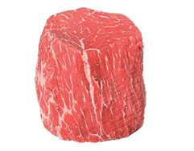
Филе миньон
Тендерлойн, Филе, Вырезка
Маленький и самый ценный. Имеет слабо выраженый вкус мяса. Очень нежная «сливочная» текстура. Должен быть толстым. Содержание жира: низкое
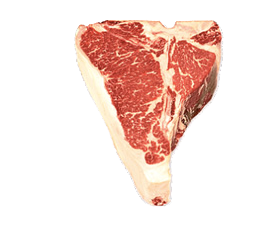
ти-бон
Ти-Бон сочетает оба стейка Вырезка + Стрип Стейк, соединенные костью в форме буквы Т. Содержание жира: среднее
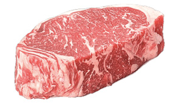
Стрип Стейк
Канзас Стейк, Нью Йорк, Стриплойн
Сочный вид стейка, имеет умеренно-выраженный «стейковый» вкус и сильный аромат. Может быть как бескостным, так и на кости. Содержание жира: среднее
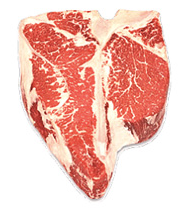
Портерхаус
Увеличенная версия стейка Ти-Бон. В этом виде стейка ширина вырезки больше. Содержание жира: среднее
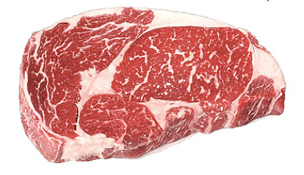
Стейк Рибай
Стейк Дельмонико, Шотландский филе, Антрекот
Самый популярный стейк. Имеет маленькие волокна. Богатый аромат говядины. Считается сочным и ароматным стейком.
Содержание жира: высокое
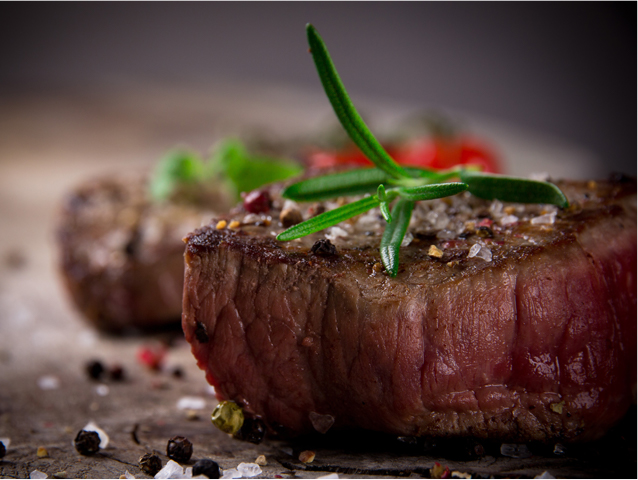
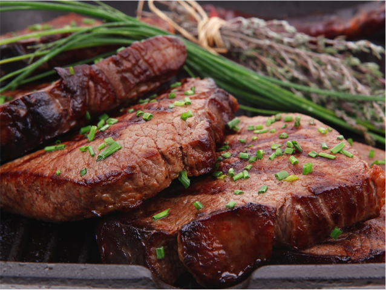
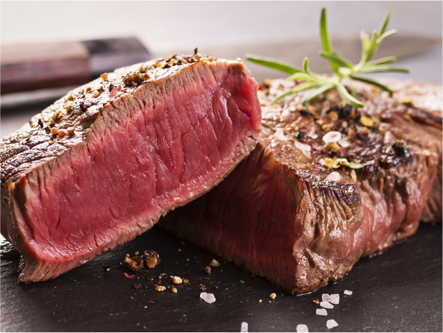
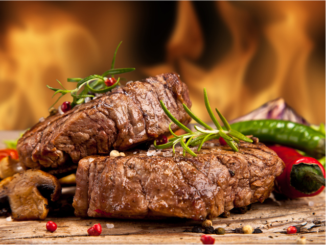
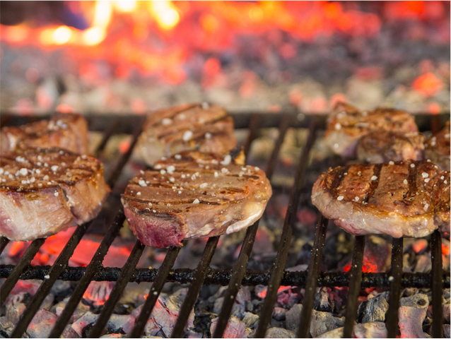
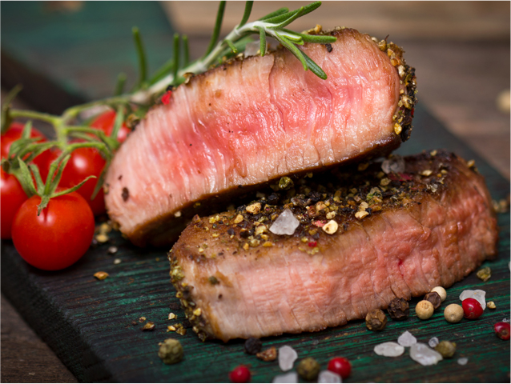
Рецепт приготовления
Стейк толщиной от 2,5 сантиметров (чем толще, тем вкуснее)
Стейк толщиной от 2,5 сантиметров (чем толще, тем вкуснее)
Каноловое или растительное масло
Сливочное масло
Морская соль, черный перец
Если вы предпочитаете идеально румяный снаружи стейк с сочной, розовой серединкой, выбирайте толстые куски мяса. Достаньте из холодильника мясо за 40 минут до приготовления. Посолите стейки заранее и дайте им дойти до комнатной температуры перед жаркой.
Налейте 1-2 чайные ложки растительного масла на хорошо разогретую сковороду (каноловое масло будет в самый раз). Дайте маслу время прогреться. Сковорода готова для стейка, когда масло начнет дымиться.
Быстро положите стейк на сковороду и начинайте жарить. Люди, которые часто переворачивали мясо во время жарки, обнаружили, что мясо подобным образом прожаривается быстрее и равномернее. Те же, кто переворачивал мясо всего один раз, пришли к выводу, что так оно прожаривается хуже, однако издает прекрасный аромат.
Жарьте стейк от 3 до 6 минут с каждой стороны, в зависимости от толщины и желаемой готовности. Очевидно, что кусочек потолще требует более длительной обжарки, а тонкий стейк приготовится быстрее.
Примерно за 2 минуты до полной прожарки добавьте в сковороду 2 столовые ложки сливочного масла, а также ваши любимые специи. Благодаря сливочному маслу стейк станет более сочным. Немного наклоните сковородку и ложкой равномерно распределите масло по поверхности мяса. Чеснок и розмарин придадут дополнительный классический аромат, также можно добавить веточку лаванды, тимьяна или шалфея.
Готовность проверяйте с помощью кухонного термометра. Термометр позволит готовить стейк с идеальным вкусом и консистенцией раз за разом. (В качестве альтернативы, можете проверить готовность мяса пальцем). Воспользуйтесь удобным электронным термометром. Он лишь немного проткнет поверхность мяса и подскажет вам, приближается ли стейк к желаемой степени готовности.
Примерно за 5° F (3° C) до того, как стейк будет готов, снимите его со сковороды, положите на тарелку и дайте остыть. Стейк будет готовиться еще некоторое время после того, как вы уберете его со сковороды. Поэтому его нужно снимать до того, как мясо, собственно, приготовится. Накройте стейк алюминиевой фольгой, и пусть он полежит хотя бы пять минут.
Если стейку не дать пропитаться в течение нескольких минут после прожарки, то как только вы начнете его резать, все соки выльются.
Что подать к стейку на гарнир
Мясо, приготовленное в духовой печи, лучше сочетать с кремовыми текстурами – пюре или соусом-дип.
Стейк, приготовленный на сковороде, можно подать с «хрустящими» ингредиентами – свежим салатом или спаржей.
А говядина, приготовленная на гриле, отлично сочетается с чуть припущенными, мягкими и хрустящими одновременно, овощами.
Не знаете, с чем подать стейк? Смело готовьте картофель и острый сырный соус. Такой гарнир и соус отлично подойдут как для запеченного мяса, так и для стейков, приготовленных на гриле. Это универсальное дополнение, которое отлично сочетается и с постным, и с достаточно жирным мясом.
- зеленый горошек или пюре из зеленого горошка и картофеля (в равных пропорциях)
- салат из свежих овощей, желательно с листями салата или шпинатом,
- картофель фри или клубни молодого картофеля, можно пюре
Соусы к стейку
Также к стейку принято подавать соусы: сырный, пикантный, барбекю, сливочный или кисло-сладкий. Жирное мясо для стейков подают с соусами, в которых преобладает кислинка или перчинка — они делают вкус более гармоничным. Если вы маринуете отруб в ароматных травах, следует добавить эти же травы в соус. Если используете ягоды, то соус к мясу должен быть ягодным. Если вы используете при мариновании какой-то особый ингредиент, например, соевый или вустерширский соус – добавьте его и в гарнир. Это поможет сделать вкус блюда более целостным.
Сырный
Для острого сырного соуса очистите перец чили от семян и мелко нарубите, измельчите кинзу, а чеснок пропустите через пресс. Разомните сыр фета вилкой, добавьте масло оливы, соль, молотый перец и подготовленные ингредиенты.
Соус должен настояться минимум 15 минут в
Винный
В кастрюлю влить 250 мл. бульон, уварить его вдвое. Добавить 125 мл. вина, 2 ч. л. сахар и 1 ч.л бальзамический уксус, варить около 10 минут на маленьком огне, пока количество жидкости не сократится в два раза. Готовый соус приправить по вкусу солью и перцем.
Грибной соус
70 гр. свежих шампиньонов
30 гр. белых грибов
150 мл. жирных сливок
Щепотка мускатного ореха
1 ст.л. муки
1 ст.л. растительного масла
Грибы порезать небольшими кусочками. Муку обжарить на растительном масле. Добавить грибы, обжарить. Залить грибы сливками, выставить маленький огонь и выпарить смесь на 1/3. В конце приправить соус мускатным орехом, солью и перцем.
Соус из красной смородины
смородина красная – 200 г
свежая мята – 2-3 веточки
репчатый лук – 100 г
коричневый сахар – 1 ст. ложка
масло оливковое – 1,5 ст. ложки
Делаем из ягод красной смородины пюре, кладем его к обжаренному луку. Через несколько минут после того, несколько минут после того, как ягоды пустят сок, добавляем мяту. Взбиваем все в блендере и получаем соус.
Вишневый соус
Вишня – 300 г
красное вино – 200 мл
экстракт ванили – 2 г
кукурузная мука – 2 ст. ложки
гвоздика – 1 шт.
сахар – 1,5 ст. ложки
Достаем из вишен косточки. Тем временем смешиваем вино, сахар, ванильный экстракт и гвоздику, провариваем все. Затем кладем в емкость вишню, варим несколько минут. После этого добавляем кукурузную муку, перемешиваем и остужаем.
Сметанный соус с перцем
зеленый сладкий перец – 2 шт.
петрушка – 50 г
лук – 1 шт.
сливочное масло – 50 мл
сметана – 150-00 мл
перец чили – 1 шт.
соль – 1 ч. ложка
Измельчаем лук, петрушку и лук, обжариваем на сливочном масле до тех пор, пока лук не станет прозрачным. Заливаем все сметаной, тушим около 10 минут. Потом взбиваем в блендере с перцем чили и солью.
Быстрый соус для стейка
майонез – 100 г
сметана – 100 г
чеснок – 2-3 зубчика
паприка, куркума, перец чили – ? ч. ложки
зелень – 1 пучок
Трем чеснок, рубим зелень, тщательно смешиваем все с майонезом, сметаной и специями.
Острый соус с мятой
хрен – 50 г
дижонская горчица – 2 ч. ложки
мед – 70 г
мята – 10 г
соль и перец – ? ч. ложка
Соединяем все ингредиенты и слегка взбиваем блендером.
Какое выбрать вино для стейка
Выбор вина под определенное блюдо в большинстве случаев продиктован классическим правилом: белое под рыбу, красное под мясо. Но, как мы знаем, стейк — вполне самодостаточное блюдо, поэтому подбирать к нему винную пару следует особенно внимательно. Идеальным союз считается тогда, когда вино органично дополняет и подчеркивает вкус стейка, а не затмевает его.
Чтобы правильно подобрать к стейку вино, необходимо учитывать как отруб, так и степень прожарки мяса. Вкус стейков, взятых из разных частей туши и имеющих различную прожарку, будет отличаться, а значит, каждому стейку требуется свое сопровождение.
Для стейка с кровью лучше всего подходят вина с бархатистой, нежной структурой. Стейки прожарки medium rare могут дополнить выдержанные образцы с землистыми оттенками, а стейк прожарки medium оптимально сочетатется с сочными винами с цветочно-ягодным ароматом. С прожаренными стейками превосходно уживаются высокотанинные вина с богатым, сложным вкусом.
Подобрать вино для стейка
Выбирите параметры вашего стейка:
Для того чтобы жить долго, приобрети для себя старого вина и старого друга..
Вам отлично подойдет:
Сabernet
Sauvignon
Стейки прожарки medium rare могут дополнить выдержанные образцы с землистыми оттенками